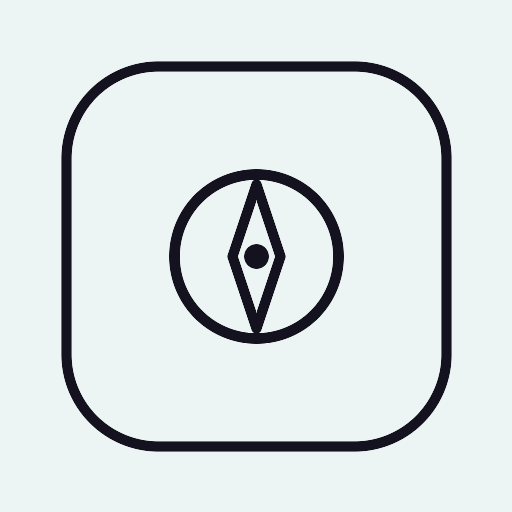
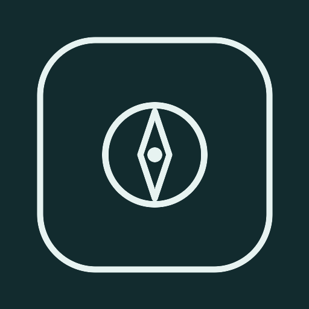

KompassWahr
Kompass mit Kamera-Übersicht und Informationen zu deinem Umfeld – ganz ohne Werbung, Konto oder Tracking.
Kamera ist aus.
–°
–
Themen
Umkreis
Ortsdaten: © OpenStreetMap-Mitwirkende (ODbL)